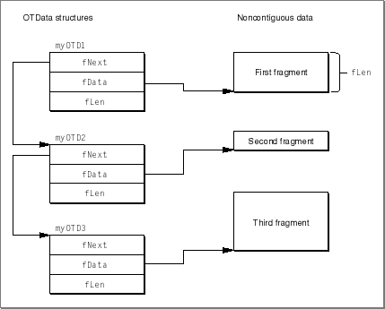

Sending Noncontiguous Data
When sending data, you specify the location and size of the buffer containing the data to be sent (for all send functions exceptOTSnd) using thelenandbuffields of aTNetBuftype structure. Open Transport also allows you to send noncontiguous data-- data stored in several locations, by using theOTDatastructure to describe that data and passing it as the data buffer. You can send noncontiguous data using the functionsOTSnd,OTSndUData,OTSndURequest,OTSndUReply,OTSndRequest, andOTSndReply.Figure 10-1 shows how you use
- Note
- The
OTDatastructure and its use in describing noncontiguous data is an Apple extension to the XTI API.OTDatastructures to describe noncontiguous data.Figure 10-1 Describing noncontiguous data

The first structure,
myOTD1, contains information about the first data fragment: thefDatafield contains the starting address of the fragment, and thefLenfield contains the length of the fragment. The fieldfNextcontains the address of theOTDatastructure,myOTD2, which specifies the size and location of the second fragment. In turn, the structuremyOTD2contains the address of theOTDatastructure that specifies the location and size of the third fragment. You must set thefNextfield of the lastOTDatastructure toNULL.When sending noncontiguous data (using the functions
OTSnd,OTSndUData,OTSndURequest,OTSndUReply,OTSndRequest, andOTSndReply), thebuffield of theTNetBufstructure (or thebufparameter to the function) must point to anOTDatastructure that describes the first data fragment. You must also set thelenfield of theTNetBufstructure (or thenbytesparameter to the function) tokNetbufDataIsOTData.